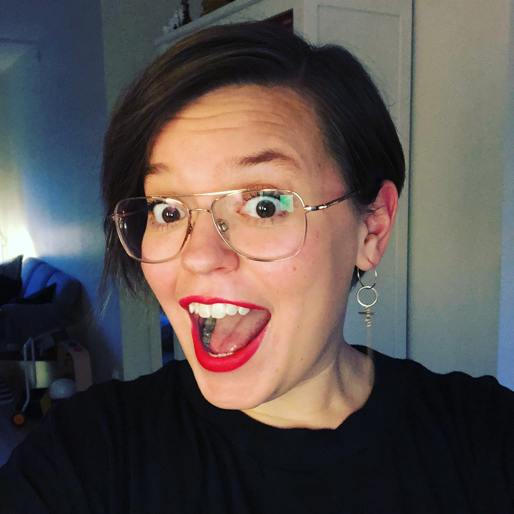

Kommunikatör och projektledare som söker nya utmaningar.
Del av projektgruppen som arrangerar den årliga knytkonferensen Geek Girl Meetup, en helg för geekiga kvinnor (alla som identi erar sig som kvinnor samt icke-binära) som jobbar eller gillar teknikbranachen.
Under Sveriges första World Scout Jamboree som lockade 40 000 deltagare, var jag en av två personer som var ansvarig för all skandinavisk press. Ett ideellt uppdrag som innebar många timmars arbete både inför och under lägret. Ett uppdrag som innebar mycket projektledning och planering likväl som operativt arbete med att skriva pressmeddelande, sköta presskontakter och planera presscentret. Under lägret var jag också ansvarig för 20 funktionärer som jobbade tillsammans med mig i presscentret.
Arbetet resulterade i cirka 2200 artiklar under 2011, med drygt 200 ackrediterade journalister på plats.
Medlem i planeringsgrupp Varumärke och kommunikation Jamboree17 maj 2017—aug 2017
Medlem i nationell arbetsgrupp för Scouternas strategiska kommunikation 2013-2014
Ideell projektledare för Almedalen 2012, Scouterna - Jan 2012—Juli 2012
Medlem i kommunikationsgruppen för Scouternas programutveckling - Nov 2007-Jun 2008